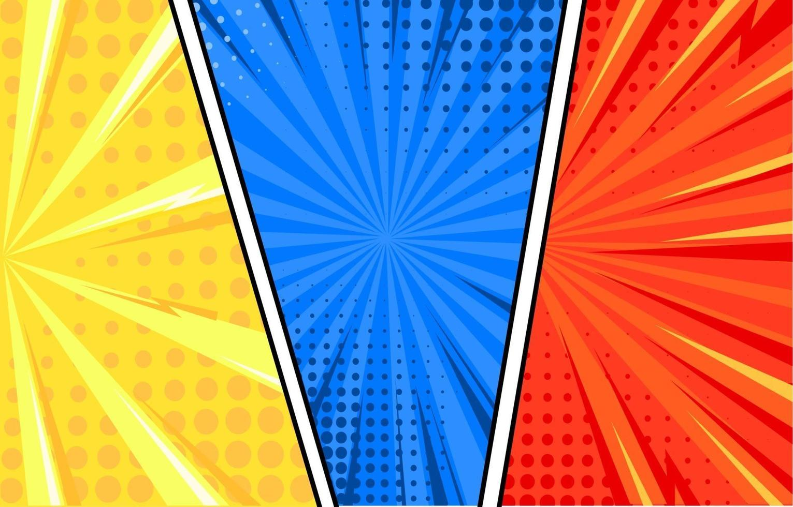

UVATECH - Universidade de Tecnologia

Módulo 3: Revisão Final: Aplicação Prática das Técnicas de Aprimoramento em HQs
Neste estágio emocionante de nossa jornada na criação de histórias em quadrinhos, é hora de reunir todas as
habilidades e conhecimentos que adquirimos até agora. Assim como um artista refina sua obra-prima antes de exibi-la,
este módulo nos levará a aplicar de maneira prática todas as técnicas de aprimoramento que exploramos anteriormente.
Desde a otimização visual até o polimento narrativo, mergulharemos nas etapas finais de preparação para tornar suas HQs
verdadeiramente excepcionais. Prepare-se para aprimorar cada detalhe, ajustar cada traço e
aperfeiçoar cada palavra, garantindo que suas histórias estejam prontas para encantar e cativar seu público.
Vamos trabalhar juntos para alcançar o nível máximo de qualidade, fechando este capítulo de nossa jornada de criação de
HQs com confiança e maestria.